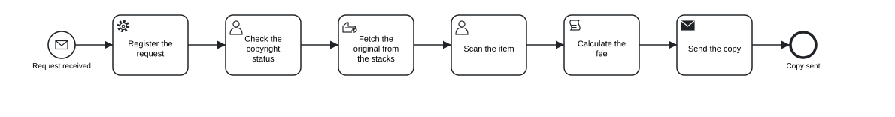
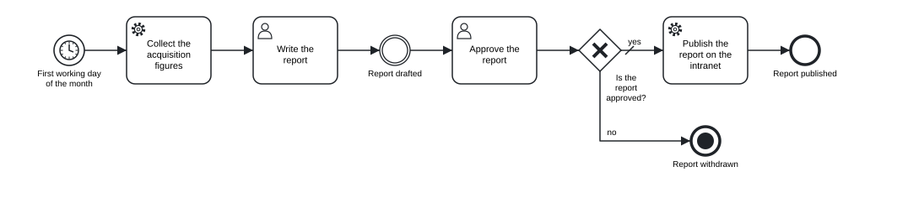
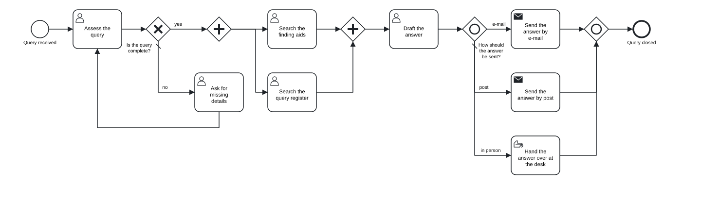
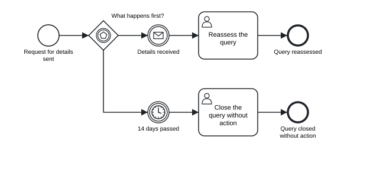

Chapter 3 Process basics
In this chapter you will learn the header line and the structure of a statement · tell identifiers from labels and write both correctly · choose among the nine kinds of task · use start, intermediate and end events · split and join paths with exclusive, parallel, inclusive and event-based gateways · write sequence flows, chains, labels, conditions and default flows · use indentation and comments · restrict a model to a level of the language with --level
3.1 The header line
Every tok document begins with a header. It is the first statement of the file; only comments and blank lines may stand above it.
tok 1.0 "Digital copy request"The header has three parts. The keyword tok says that this is a tok document. The number 1.0 is the version of the language the document is written in; it is required and has a minor part (1.0, not 1). The label "Digital copy request" is the title of the model: it becomes the name of the definitions element of the BPMN file and, in a document without pools, the name of the process.
The tools accept the versions 0.1, 0.3, 0.5, 0.6, 0.7 and 1.0. A document written for an earlier version means exactly the same under the current tools, so models from earlier years need no change. Write tok 1.0 for new models: it gives you every construct of the language. A version number the tools do not know is a warning (P006), and the document is then read as language 1.0; a header whose version is not a number at all is the error P005, and a second header further down the file is the error P010.
The header may also carry attributes. You will meet them in later chapters:
| Attribute | Meaning | Chapter |
|---|---|---|
doc="Text" |
documentation of the model, exported to the BPMN file | this chapter |
process=ID |
the identifier of the process of a document without pools (default process) |
this chapter |
process-name="Name" |
the name of that process, when it should differ from the title | this chapter |
executable, target=camunda, version-tag="v1" |
the model is meant for a process engine | 10 |
A document without pools, like all the examples of this chapter, describes one process. Its elements stand at the top level of the file, without indentation, and the BPMN export puts them into a single process element. Documents with pools and lanes describe collaborations between participants; they are the subject of Chapter 4.
3.2 Statements
After the header comes a sequence of statements, one per line. A statement cannot continue on the next line, and two statements cannot share a line. Every statement starts with a lowercase keyword; keywords are case-sensitive, so Start or USER is not a keyword.
The statements that declare flow nodes (events, tasks and gateways) all have the same shape:
KIND IDENTIFIER "Label" attributestok 1.0 "Statement parts"
start received "Request received" message="Copy request"
send deliver "Send the copy" message="Digital copy"
end sent "Copy sent"
flow received -> deliver -> sentIn send deliver "Send the copy" message="Digital copy", send is the kind (a send task), deliver is the identifier, "Send the copy" is the label, and message="Digital copy" is an attribute that names the message the task sends.
Attributes come in two forms. A key=value pair has a value that is a word (P14D), a number (3, 0.25) or a quoted string ("Digital copy"). A flag is a bare word that switches something on, such as parallel on a task or default on a flow. Attributes may be written in any order; tok fmt prints them in a fixed order, so they always appear the same way.
The checker treats mistakes in attributes differently. An unknown keyword is an error, because the tools cannot know what the line means. An unknown key of an attribute is only a warning, because the rest of the line still makes sense. An unknown flag is an error:
model.tok:4: warning R010: unknown attribute 'colour' on user
model.tok:5: error R011: unknown flag 'urgent' on user
model.tok:6: error P001: unknown keyword 'taks'Each key is written once per line. In language 1.0, giving the same key or flag twice on one line is a deprecation warning (R090): only the last value ever counted, and tok fmt keeps only that one. (Events with several triggers, described in Chapter 5, are the exception.)
One attribute is allowed on almost every statement: doc="Text" gives the element its documentation, which the BPMN export writes as the documentation of the element and which BPMN tools show in their properties panel. Use \n inside the text for a line break.
tok 1.0 "Documented task"
start s "Request received"
user check "Check the copyright status" doc="Works by authors who died less than 70 years ago need the rights holder's consent."
end e "Request checked"
flow s -> check -> e3.3 Identifiers and labels
Every element has an identifier, written right after its keyword. The identifier is how the rest of the document refers to the element: flows connect identifiers, boundary events name the activity they are attached to by its identifier, and so on. It also becomes the id attribute of the element in the BPMN XML, and the name under which a process engine reports the element.
An identifier must satisfy three conditions:
| Condition | Correct | Wrong |
|---|---|---|
starts with a letter or _ |
scan2, _draft |
2scan |
contains only ASCII letters, digits, _ and - |
register, check-rights, fee_total |
prüfen, check rights, fee.total |
| is unique in the whole document | end-ok, end-rejected |
end twice |
Identifiers are ASCII because they end up in XML identifiers, file names, logs and the code of programs that work with the process; many of these systems handle only plain Latin letters reliably. The checker enforces both rules:
model.tok:4: error R004: identifier 'prüfen' must use only ASCII letters, digits, '_' and '-'
model.tok:5: error R001: identifier 's' is already used on line 3The label is the name for people. It is written in double quotes after the identifier and appears in the diagram. A label can be in any language and contain any character. Inside a label, \" stands for a double quote, \\ for a backslash and \n for a line break in the diagram. A label is optional: a joining gateway, for example, usually needs no name on the diagram, so and results is a complete statement.
Good identifiers are short but readable: register, fee, sent. They should describe the element, so that a flow line such as flow fee -> deliver -> sent reads like a sentence. Avoid numbering (t1, t2, t3): it makes the flows unreadable and breaks down as soon as a step is inserted. Labels follow the conventions of BPMN: a task is named with a verb and an object (“Scan the item”), an event with a state that has been reached (“Copy sent”), a splitting gateway with a question (“Is the query complete?”).
3.4 Tasks
A task is a unit of work that the process model does not break down further. BPMN distinguishes kinds of task by who or what does the work, and tok has a keyword for each:
| Keyword | BPMN element | Use it when |
|---|---|---|
 task |
task | the kind of work is not known or does not matter |
 user |
user task | a person does the work with the help of an information system: a form, a records system, a library catalogue |
 manual |
manual task | a person does the work without a system: a conversation, carrying files, a phone call |
 service |
service task | a system does the work by itself, without a person |
 script |
script task | a calculation by a fixed formula, executed by the process engine |
 rule |
business rule task | the result follows from a set of rules, typically a decision table (Chapter 9) |
 send |
send task | the work is sending a message to someone outside the process |
 receive |
receive task | the work is waiting for a message from outside |
 call |
call activity | the work is another process, described on its own |
The words of a description usually point to the right kind. “Enters into the system”, “checks in the catalogue” or “fills in the form” mean a user task. “Carries”, “hands over”, “phones” mean a manual task. “Automatically”, “the system assigns” mean a service task. “Sends” and “receives” in contact with another organisation mean send and receive tasks.
The following model of a request for a digital copy uses seven kinds of task:
# Digital copy request in a library
tok 1.0 "Digital copy request"
start received "Request received" message="Copy request"
service register "Register the request"
user review "Check the copyright status"
manual fetch "Fetch the original from the stacks"
user scan "Scan the item"
script fee "Calculate the fee"
send deliver "Send the copy" message="Digital copy"
end sent "Copy sent"
flow received -> register -> review -> fetch -> scan -> fee -> deliver -> sent
Figure 3.1: A digital copy request: a sequence of tasks of different kinds.
Download the model (.tok) Download the BPMN export (.bpmn)
The library system registers the request without human help (service). A librarian checks the copyright status in the catalogue (user) and fetches the original from the stacks by hand (manual). The scan is made at a scanning station that records the job (user). The fee is calculated by a fixed tariff (script), and the copy is sent to the reader (send). The diagram shows each kind with its marker in the top left corner of the task.
send and receive tasks name their message with message="Name". Messages are declared by their names: every element that names the same message refers to one message in the BPMN file. A call activity names the process it calls with process=ID; the called process is usually modelled in a file of its own.
3.4.1 Markers of repetition
Three flags mark a task that is performed more than once. They apply to every kind of task:
| Flag | BPMN | Meaning |
|---|---|---|
loop |
standard loop | the task repeats until a condition is met |
parallel |
parallel multi-instance | several instances run at the same time, for example one per reviewer |
sequential |
sequential multi-instance | several instances run one after another |
tok 1.0 "Task markers"
start s "Manuscript accepted"
user review "Review the manuscript" parallel
user proofs "Correct the proofs" loop
manual sheets "Check each printed sheet" sequential
call print "Print the book" process=printing
end e "Book printed"
flow s -> review -> proofs -> sheets -> print -> eThe diagram shows a loop as a circular arrow and multi-instance as three bars, vertical for parallel and horizontal for sequential. The condition of a loop and the collection a multi-instance task works through are details for the executable layer and for the more precise models of later chapters; the flag alone already makes the diagram say what it should.
The flag compensation, which marks a task that undoes the effect of another, belongs with the exceptions of Chapter 5. The attributes that make tasks executable, such as forms of user tasks or job types of service tasks, are the subject of Chapter 10.
3.5 Events
An event is something that happens: a request arrives, a deadline passes, a state is reached. BPMN distinguishes events by their position in the process:
| Keyword | BPMN element | Position |
|---|---|---|
 start |
start event | where the process begins; no incoming flow |
 end |
end event | where a path of the process ends; no outgoing flow |
") throw |
intermediate throw event | on a path, signalling that something has happened |
 catch |
intermediate catch event | on a path, waiting for something to happen |
 boundary |
boundary event | attached to an activity, interrupting or accompanying it |
An event without attributes has no trigger: it is a plain (none) event. A plain start event simply marks where the process begins, a plain end event where a path ends, and a plain intermediate throw event marks a milestone, a state the process has reached that is worth showing on the diagram. Most of the events in the examples of this chapter are plain events.
A trigger says what causes or is caused by the event, and is given as an attribute. Two triggers are useful from the start:
message="Name"on a start event: the process starts when a message arrives (a request, an application, a letter).timer=...on a start event: the process starts at a given time or regularly.
The time of a timer follows ISO 8601, the same notation BPMN tools and Camunda use:
| Value | Meaning |
|---|---|
P3D |
a duration of 3 days |
PT2H |
2 hours (T separates the days from the hours) |
PT30M |
30 minutes |
P1DT12H |
a day and a half |
2027-01-15T09:00 |
a date and time |
R/2027-01-04T08:00/P1M |
a cycle: from 4 January 2027, 8:00, every month |
R3/PT1H |
a cycle: three times, every hour |
On end events, the flag terminate makes a terminate end event: when the process reaches it, the whole process instance ends at once, even if other paths are still active.
The monthly report of a library’s acquisitions department shows these events together:
tok 1.0 "Monthly acquisitions report"
start month "First working day of the month" timer=R/2027-01-04T08:00/P1M
service figures "Collect the acquisition figures"
user draft "Write the report"
throw drafted "Report drafted"
user approve "Approve the report"
xor approved "Is the report approved?"
service publish "Publish the report on the intranet"
end published "Report published"
end withdrawn "Report withdrawn" terminate
flow month -> figures -> draft -> drafted -> approve -> approved
flow approved -> publish "yes" default
flow approved -> withdrawn "no" when="approved = false"
flow publish -> published
Figure 3.2: A process started by a timer, with a milestone and a terminate end event.
Download the model (.tok) Download the BPMN export (.bpmn)
The process starts on the first working day of every month (timer=). The plain intermediate throw event “Report drafted” marks a milestone between writing and approval. If the report is not approved, the terminate end event “Report withdrawn” ends the process instance.
Intermediate catch events always need a trigger, because they wait for something; a catch line without one is the error E010. The full set of triggers (messages, timers, signals, errors, escalations, conditions, links, compensation and cancellation), boundary events and event sub-processes are the subject of Chapter 5.
3.6 Gateways
A gateway splits the flow of a process into several paths or joins several paths into one. tok has a keyword for each kind of gateway in BPMN:
| Keyword | BPMN element | As a split | As a join |
|---|---|---|---|
 xor |
exclusive gateway | exactly one path is taken | lets through every token that arrives |
 and |
parallel gateway | all paths are taken at once | waits for all paths |
 or |
inclusive gateway | one or more paths, by their conditions; the default path if no condition holds | waits for the paths that were actually taken |
 eventgw |
event-based gateway | the path of the event that happens first | (not used as a join) |
 complex |
complex gateway | paths by conditions, like or |
fires when its activation condition holds |
Two naming conventions from BPMN apply. A splitting gateway is labelled with a question: xor complete "Is the query complete?". A joining gateway usually has no label: and results. A splitting gateway whose label is not a question gets a style note (L020) from the checker.
Every split of an and or or gateway should be joined by a gateway of the same kind. An and split joined by an xor gateway lets every parallel path continue on its own, so everything after the join runs several times, which is rarely what you want; the checker warns about it (W051).
3.6.1 Exclusive, parallel and inclusive gateways
The following model of a query to an archive uses three kinds of gateway. The exclusive gateway checks whether the query is complete; the “no” branch asks for the missing details and returns to the assessment, which forms a loop. The parallel gateway starts two searches at once. The inclusive gateway chooses how to send the answer: by e-mail, by post or both, and if neither applies, the answer is handed over in person.
tok 1.0 "Archive query"
start arrived "Query received"
user assess "Assess the query"
xor complete "Is the query complete?"
user ask "Ask for missing details"
and search
user finding-aids "Search the finding aids"
user register "Search the query register"
and results
user answer "Draft the answer"
or channel "How should the answer be sent?"
send email "Send the answer by e-mail" message="Answer"
send post "Send the answer by post" message="Answer"
manual desk "Hand the answer over at the desk"
or delivered
end closed "Query closed"
flow arrived -> assess -> complete
flow complete -> search "yes" when="complete = true"
flow complete -> ask "no" default
flow ask -> assess
flow search -> finding-aids -> results
flow search -> register -> results -> answer -> channel
flow channel -> email "e-mail" when="email != null"
flow channel -> post "post" when="address != null and paper = true"
flow channel -> desk "in person" default
flow email -> delivered
flow post -> delivered
flow desk -> delivered -> closed
Figure 3.3: An archive query: exclusive gateway with a loop, parallel split and join, inclusive split and join with a default flow.
Download the model (.tok) Download the BPMN export (.bpmn)
Notice three details.
- A loop needs no extra gateway. The flow
ask -> assessreturns to a task that already has an incoming flow. A task with two incoming flows behaves like an exclusive join. If you prefer to show the join explicitly, put anxorgateway before the assessment and direct both flows into it; the meaning is the same. - Splits and joins match. The paths from
and searchmeet inand results, those fromor channelinor delivered. - A chain is not an order of work. The canonical form writes
search -> register -> results -> answer -> channelas one chain, but that does not mean the register is searched after the finding aids. The flows describe connections only; that both searches run at once follows from the parallel gateway.
3.6.2 The event-based gateway
An event-based gateway checks no conditions. The process stops at the gateway and waits; whichever of the following events happens first decides the path. The elements directly after the gateway must therefore be intermediate catch events (with a message, timer, signal or conditional trigger) or receive tasks.
tok 1.0 "Waiting for missing details"
start asked "Request for details sent"
eventgw wait "What happens first?"
catch details "Details received" message="Missing details"
catch deadline "14 days passed" timer=P14D
user reassess "Reassess the query"
user shelve "Close the query without action"
end reassessed "Query reassessed"
end shelved "Query closed without action"
flow asked -> wait
flow wait -> details
flow wait -> deadline
flow details -> reassess -> reassessed
flow deadline -> shelve -> shelved
Figure 3.4: Waiting for missing details: a message or a deadline, whichever comes first.
Download the model (.tok) Download the BPMN export (.bpmn)
The flows leaving an event-based gateway have no labels or conditions: the labels of the events (“Details received”, “14 days passed”) carry the answer. If anything other than a catch event or a receive task follows the gateway, the checker reports the error E016.
3.6.3 The complex gateway
The complex gateway covers the cases the other gateways cannot express. Its typical use is a join that continues as soon as enough paths have arrived: for example, when a decision can be taken after two of three reviews. The condition is given with activation=, in which _activationCount is the number of paths that have arrived:
tok 1.0 "Two of three reviews"
start s "Manuscript sent out"
and invite
user r1 "First review"
user r2 "Second review"
user r3 "Third review"
complex enough "Two reviews in?" activation="_activationCount >= 2"
user decide "Decide on the manuscript"
end e "Decision made"
flow s -> invite
flow invite -> r1 -> enough
flow invite -> r2 -> enough
flow invite -> r3 -> enough -> decide -> eThe complex gateway is part of BPMN 2.0.2 and of the analyses and simulations of tok, but Camunda 8 does not execute it; Chapter 10 lists what that means for executable models.
3.7 Sequence flows
Sequence flows connect the flow nodes of a process and give the order in which the work is done. In tok they are written with the keyword flow and arrows between identifiers:
tok 1.0 "Flows"
start received "Request received"
user register "Register the request"
user review "Check the copyright status"
end done "Request checked"
flow received -> register
flow register -> review -> doneA line with two arrows or more is a chain: flow register -> review -> done creates two sequence flows, one from register to review and one from review to done. Chains make linear parts of a model short and readable.
Each sequence flow gets an identifier derived from its ends: f-register-review, f-review-done. When two flows connect the same pair of nodes, the second one gets -2, the third -3. You will see these identifiers in some diagnostics and in the BPMN file. To choose an identifier yourself, write id= on the flow.
Flow lines may stand anywhere in the document, and a flow may name a node that is declared further down. By convention they come after the elements, and the canonical form prints them there.
3.7.1 Labels and attributes
A flow can have a label, written in quotes after the target, and attributes. Because a label or an attribute must describe one particular flow, a line with a label or attributes contains exactly one arrow. The line flow g -> a -> e "yes" is ambiguous (which of the two flows says “yes”?) and is rejected:
model.tok:10: error R020: a flow line with a label or attributes must contain exactly one arrowWrite it as two lines instead: flow g -> a "yes" and flow a -> e.
| Attribute | Meaning |
|---|---|
"Label" |
the name of the flow, shown next to it; for the branches of a gateway, the answer to its question |
when="FEEL" |
the condition of the flow, evaluated on the data of the case |
default |
the default flow, taken when no condition of the other flows holds |
id=ID |
an explicit identifier |
doc="Text" |
documentation |
p=0.3 |
the probability of the branch in a simulation (Chapter 11) |
3.7.2 Conditions
A label such as “yes” is enough for a person reading the diagram. A process engine, a simulation or a careful reviewer needs a condition that can be evaluated on the data of the case. Conditions are written with when= in FEEL, the Friendly Enough Expression Language defined by DMN, which is also the expression language of Camunda 8. Here are four branches of a gateway that sorts readers into categories:
tok 1.0 "Reader categories"
start s "Registration requested"
xor kind "Which reader category?"
user student "Register a student"
user senior "Register a senior reader"
user staff "Register a staff member"
user other "Register an external reader"
xor merged
end e "Reader registered"
flow s -> kind
flow kind -> student "student" when="type = \"student\" and age >= 18"
flow kind -> senior "senior" when="age between 65 and 120"
flow kind -> staff "staff" when="employee = true or email != null"
flow kind -> other "other" default
flow student -> merged
flow senior -> merged
flow staff -> merged
flow other -> merged -> eThe basic forms of FEEL cover most conditions:
| Expression | Meaning |
|---|---|
age >= 18, price < 150, days != 0 |
comparisons: =, !=, <, <=, >, >=; a single = compares, it does not assign |
complete = true, urgent |
a boolean value; urgent alone means “urgent is true” |
type = "student" |
text in double quotes |
a and b, a or b, not(a) |
combining conditions |
email != null |
the value exists |
age between 18 and 26 |
a range, both ends included |
Mind the quotes. The whole condition is already the quoted value of when=, so a text inside it is written with escaped quotes: when="type = \"student\"" is the condition type = "student".
Conditions are written without the leading = that Camunda Modeler shows in executable models. The exporter adds it where Camunda expects it.
tok check checks the syntax of every condition. A mistake is the error F002, with an explanation:
model.tok:9: error F002: FEEL syntax error: expected ')', found end of expressionDocuments of language 1.0 use the full FEEL of DMN 1.5 (conformance level 3): dates and durations, lists, contexts, functions and more. Chapter 9 introduces the rest of the language.
While a model is still descriptive, labels alone are fine. Add conditions when the model is to be simulated or executed, or when the labels leave room for doubt. A condition you have not worked out yet can be written as when="": the BPMN file then has a condition without an expression, as BPMN tools draw it.
3.7.3 Default flows
One outgoing flow of an xor, or or complex gateway may be marked as the default flow with the flag default. It is taken when none of the conditions of the other flows holds. The diagram shows it with a short slash at its start. A default flow has no condition; the checker rejects a flow that is both (E015), and a default flow or a condition on a flow leaving a parallel gateway (E017), because a parallel gateway takes every path anyway.
An inclusive gateway without a default flow gets the warning W050: if no condition holds, the process would be stuck. Each branch of an exclusive or inclusive split should have a label, a condition or the default status; a branch without any of them gets the warning W021.
Conditional flows can also leave a task directly, without a gateway. In that case default marks the flow taken when no condition holds:
tok 1.0 "Conditional flows from a task"
start s "Order received"
user check "Check the order"
user urgent "Handle as urgent"
user normal "Handle as normal"
end e1 "Urgent order handled"
end e2 "Order handled"
flow s -> check
flow check -> urgent "urgent" when="total > 1000"
flow check -> normal default
flow urgent -> e1
flow normal -> e2Most modellers prefer an explicit gateway, which makes the decision visible; both forms are valid BPMN.
3.8 Indentation and blocks
Indentation in tok has a meaning: a line indented deeper than the statement above it belongs to the block of that statement. A block ends at the first line that is indented as much as its parent statement or less.
Only some statements have blocks: pools and lanes, which hold flow nodes (Chapter 4); sub-processes, which hold a process of their own; choreographies; decisions, which hold tables or boxed expressions (Chapter 9); forms, which hold fields (Chapter 10). In a document without pools and sub-processes, like those of this chapter, every statement starts at the beginning of its line.
Three rules keep indentation unambiguous:
- Indentation is made of spaces. A tab character in the indentation is the error
T002. - A line indented under a statement without a block is an error. Indenting a task under another task gives
P003(the statement cannot have an indented block). - When a block ends, the next line returns to an earlier level. A line indented to a depth that matches no open block is
T003.
The canonical form uses two spaces per level. You may indent with any consistent number of spaces; tok fmt converts it.
3.10 Levels of the language
tok covers the whole of BPMN 2.0.2 and much of DMN 1.5. A beginner, or the reader of a high-level model, needs much less. The option --level of tok check restricts the language to one of three levels, and reports everything beyond it:
| Level | Accepts |
|---|---|
basic |
plain start and end events; the tasks task, user, service and manual; the gateways xor and and; pools, lanes and message flows; data and notes; no attributes of the executable layer |
analytic |
all of BPMN except the executable layer, forms and decisions, and without the advanced elements added in languages 0.5 and 0.6 (transactions, complex gateways, multiple events, conversations, choreographies and others) |
full (default) |
everything |
tok check 03-copy-request.tok --level basic
03-copy-request.tok:4: error R040: 'start' is not available at level basic
03-copy-request.tok:9: error R040: 'script' is not available at level basic
03-copy-request.tok:10: error R040: 'send' is not available at level basic
03-copy-request.tok: 3 error(s), 0 warning(s), 0 note(s)The start event is allowed at the level basic, but not with a message trigger; script and send tasks belong to analytic models. The interlibrary loan of Chapter 1 and the reading room request of Chapter 2 pass at the level basic.
Levels are a teaching and communication device. A course can require models at the level basic in its first weeks; a team can agree that models for management stay at the level basic or analytic, so that they remain readable to people who know only the core of BPMN. In VS Code the setting tok.level applies a level to the live diagnostics. The levels are not the conformance classes of the BPMN specification, which tok check --class checks; Chapter 7 explains the classes.
3.11 Typical mistakes
The following model of preparing an exhibition contains four mistakes that are common in models with gateways. Try to find them by reading the text before you look at the diagnostics.
tok 1.0 "Preparing an exhibition (with errors)"
start decided "Exhibition decided"
and prepare
user select "Select the objects"
user captions "Write the captions"
xor ready
xor accepted "Did the director approve?"
user install "Install the exhibition"
user revise "Revise the script"
end opened "Exhibition opened"
flow decided -> prepare
flow prepare -> select "objects" when="objects = true"
flow prepare -> captions
flow select -> ready
flow captions -> ready
flow ready -> accepted
flow accepted -> install "yes"
flow accepted -> revise
flow install -> openedtok check 03-exhibition-error.tok
03-exhibition-error.tok:7: warning W051: join of a different type than the split (e.g. AND split joined by XOR) (ready)
03-exhibition-error.tok:10: warning W042: path without an end event (element without outgoing flow) (revise)
03-exhibition-error.tok:14: error E017: condition or default flow on a parallel gateway (f-prepare-select)
03-exhibition-error.tok:20: warning W021: branch of an XOR/OR split without label, condition or default status (f-accepted-revise)
03-exhibition-error.tok: 1 error(s), 3 warning(s), 0 note(s)The identifier in parentheses at the end of each message names the element or flow concerned; note the derived identifiers of flows such as f-prepare-select.
| Code | Problem | Correction |
|---|---|---|
E017 |
a condition on a flow leaving a parallel gateway | remove when=; a parallel gateway always takes every path |
W051 |
an and split joined by an xor gateway |
change xor ready to and ready |
W021 |
a branch of an exclusive split with neither label, condition nor default status | add the label "no" and, if the other branch has a condition, default |
W042 |
a path that ends at a task | add a flow from “Revise the script”, back to the approval or to an end event |
Warnings do not stop the exports, but they almost always point to a real mistake in the model. Treat a model as finished when it has no errors and every remaining warning has a reason you can state.
Exercises
Exercise 3.1
- Task kinds. For each step, choose the keyword of the task and write the statement with an identifier and a label: (a) the reading room attendant brings the boxes from the stacks; (b) the repository system assigns a DOI to a deposited article; (c) an editor fills in the review form in the journal system; (d) the library sends an overdue notice to a reader; (e) the loan fee is computed from a tariff; (f) the whole cataloguing procedure, modelled in another file, is carried out.
- A linear process. Write a model of the registration of an incoming letter in a university registry: the letter arrives by post; a clerk registers it in the records system; the system assigns a case number by itself; the clerk scans the letter; the head of the registry assigns it to a unit in the system; the clerk carries the original to the archive; the system notifies the unit automatically; the process ends. Check the model, format it and draw it.
- Gateways. Extend the archive query: after the answer is drafted, the head of the department approves it; if it is not approved, it goes back to the archivist for correction. Add the gateway, the flows and conditions on both branches (
approved = trueand a default), and check that no warning appears. - Fix the exhibition. Download
03-exhibition-error.tokand correct it untiltok checkreports no errors and no warnings. Compare your corrected diagram with the original. Download the model with errors (.tok) - Waiting for a reply. A library asks a publisher for a licence. If the licence arrives within 30 days, the e-book is added to the catalogue; if not, the request is closed; if the publisher refuses in that time, the refusal is recorded. Model the waiting with an event-based gateway and three events, one of them a timer.
- Levels. Check each model of this chapter with
--level basicand--level analytic. For each element rejected at the levelbasic, write a version of the model that stays at that level and say what information the simpler model loses.
3.9 Comments
A comment starts with
#and runs to the end of the line. It is a note for people, and the tools ignore it when they build the model. A comment can take a whole line or stand at the end of a statement:A
#inside a quoted label or attribute value is ordinary text, not a comment.tok fmtkeeps every comment. A comment line belongs to the statement that follows it and is printed above it, even if the formatter moves the statement; a comment at the end of a line stays at the end of that statement’s line; comments at the end of the file are printed last. Comments are therefore a safe place for the source of a requirement, the person to ask about a step, or a reminder of a decision taken in a meeting.